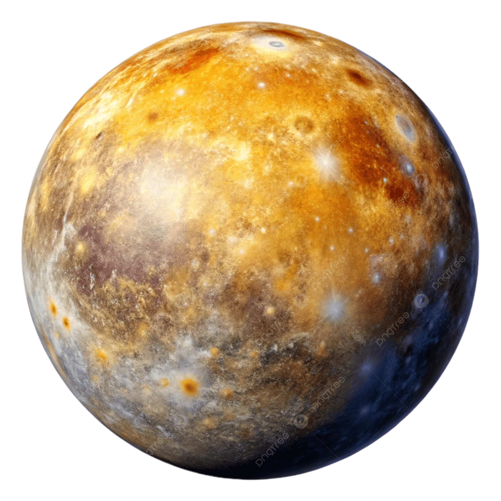
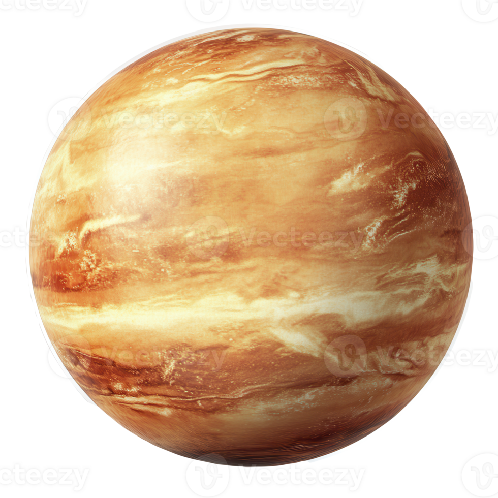

What you’re looking at
This page combines key physical parameters for Mercury, Venus, Earth, and Mars into one table. The first row uses images for quick recognition, and the rows beneath compare seven different data fields.
Note: Venus has a negative sidereal rotation period because it rotates in the opposite direction (retrograde).
Four-Planet Comparison
| Field | Mercury | Venus | Earth | Mars |
|---|---|---|---|---|
| Image |
 |
 |

|

|
| Mean radius (km) | 2,439.4 | 6,051.8 | 6,371.0084 | 3,389.50 |
| Mass (×1024 kg) | 0.330103 | 4.86731 | 5.97217 | 0.641691 |
| Bulk density (g/cm3) | 5.4289 | 5.243 | 5.5134 | 3.9340 |
| Sidereal rotation (days) | 58.6462 | -243.018 | 0.99726968 | 1.02595676 |
| Sidereal orbital period (years) | 0.2408467 | 0.61519726 | 1.0000174 | 1.8808476 |
| Equatorial gravity (m/s2) | 3.70 | 8.87 | 9.80 | 3.71 |
| Escape velocity (km/s) | 4.25 | 10.36 | 11.19 | 5.03 |
Source: NASA/JPL Solar System Dynamics — Planetary Physical Parameters.
Extra touches
- Sticky header row for easier reading while scrolling.
- Striped rows and hover highlight for clarity.
- Rounded image tiles and a card-style layout.